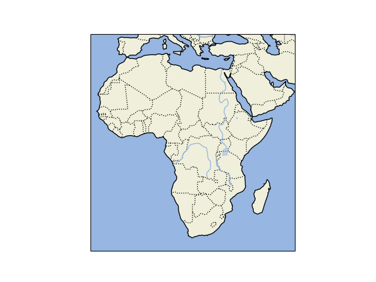

Note
Click here to download the full example code
Features¶
A demonstration of some of the built-in Natural Earth features found in cartopy.
import cartopy.crs as ccrs
import cartopy.feature as cfeature
import matplotlib.pyplot as plt
def main():
fig = plt.figure()
ax = fig.add_subplot(1, 1, 1, projection=ccrs.PlateCarree())
ax.set_extent([-20, 60, -40, 45], crs=ccrs.PlateCarree())
ax.add_feature(cfeature.LAND)
ax.add_feature(cfeature.OCEAN)
ax.add_feature(cfeature.COASTLINE)
ax.add_feature(cfeature.BORDERS, linestyle=':')
ax.add_feature(cfeature.LAKES, alpha=0.5)
ax.add_feature(cfeature.RIVERS)
plt.show()
if __name__ == '__main__':
main()
Total running time of the script: ( 0 minutes 0.704 seconds)